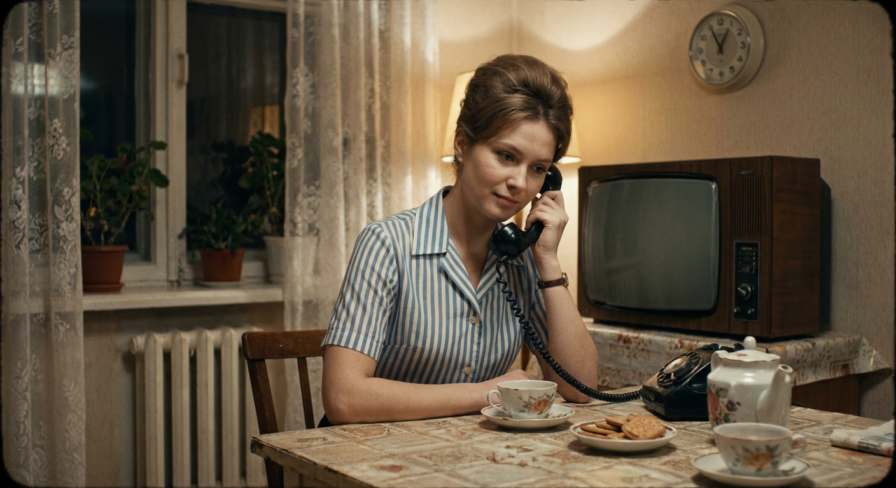
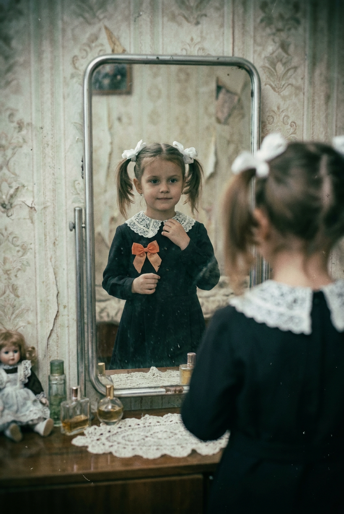
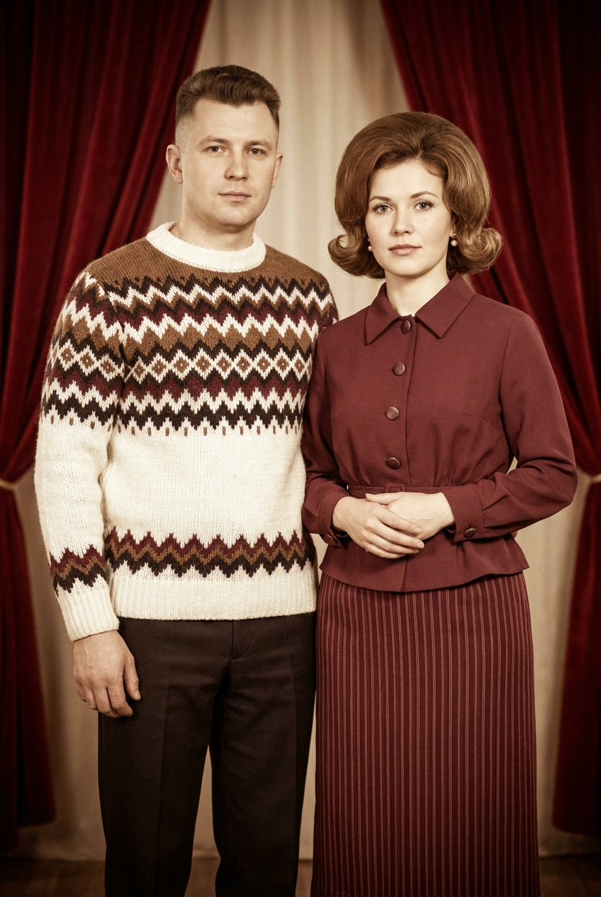
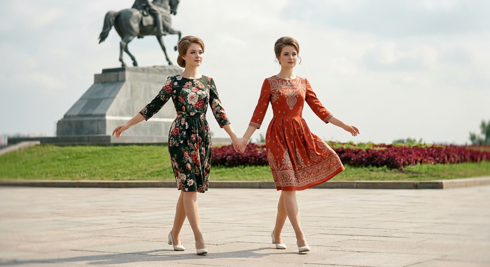
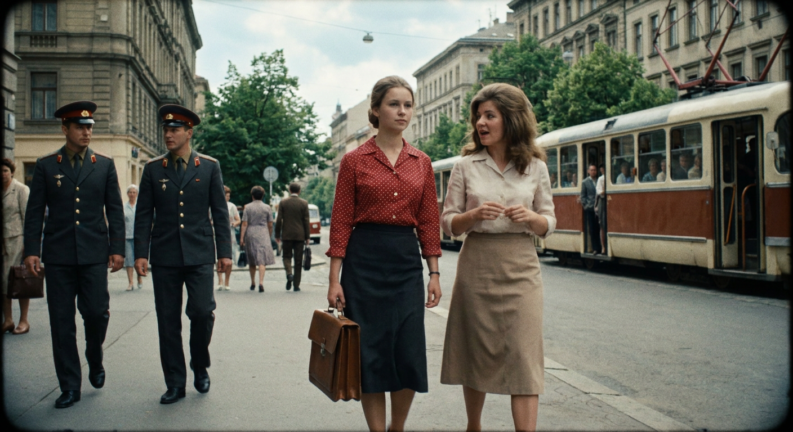
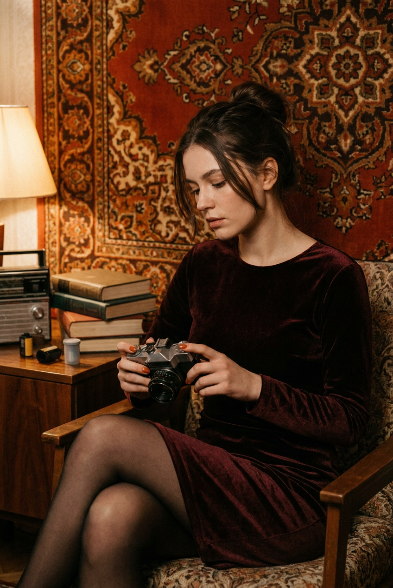
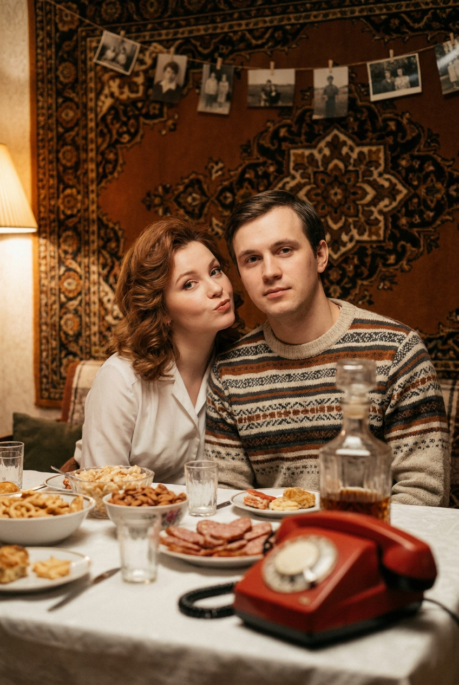
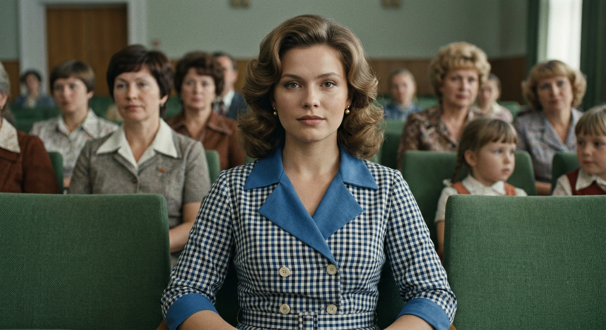
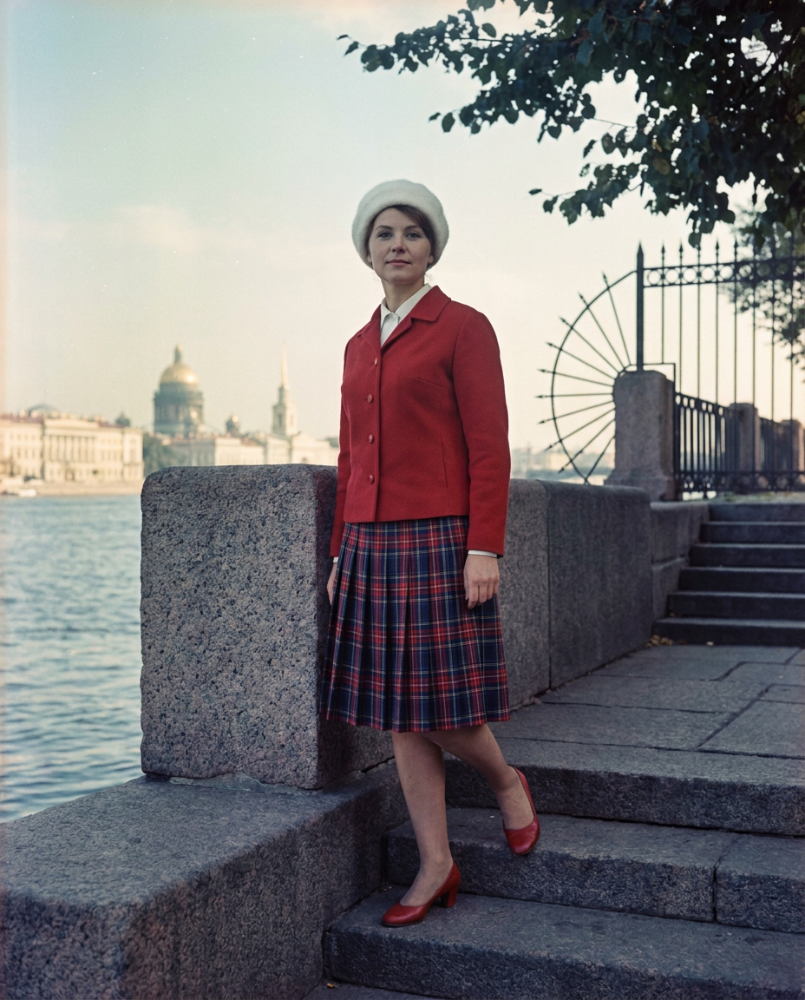
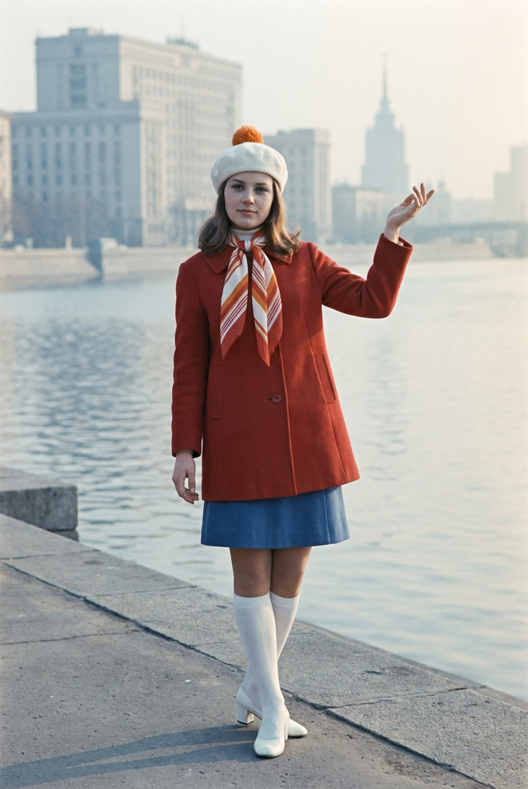

ИИ-фото в советском стиле: 10 промптов для нейросети

Советская эстетика легко превращается в случайный винтаж: нейросеть смешивает десятилетия, добавляет современные вещи и делает лица пластиковыми. Хороший промпт решает эту проблему — задаёт эпоху, одежду, свет, композицию и характер плёнки ещё до генерации.
В подборке — 10 готовых сценариев для ИИ-фото: от семейной кухни и зеркала в квартире до уличных портретов, танцевальной постановки, трамвая и городской набережной. Промпты можно использовать как основу, меняя героиню, цвет одежды или архитектурный фон.
Как сгенерировать такое фото: пошагово
Нужен снимок анфас при ровном свете, лицо в кадре целиком, без тёмных очков и головных уборов. Разрешение от 1000 пикселей по короткой стороне. Чем чётче исходник, тем точнее модель повторит черты.
Выберите сценарий ниже и нажмите «Копировать» — текст уйдёт в буфер целиком, вместе с командой сохранения внешности. Эта команда стоит первой строкой и отвечает за то, чтобы на выходе было ваше лицо, а не случайное.
Кнопка «Сгенерировать» рядом с каждым промптом открывает модель в новой вкладке. Nano Banana Pro работает с референсом лица — в отличие от моделей, которые генерируют портрет с нуля и узнаваемость теряют.
Промпт — в поле ввода, портрет — через загрузку референса. Порядок значения не имеет, но без референса команда сохранения внешности работать не будет: модели нечего сохранять.
Для сторис и ленты берите 9:16, для превью и обложек — 4:3. Первый результат редко идеален: если поза или свет ушли не туда, поправьте соответствующую часть промпта и запустите заново. Обычно хватает двух-трёх итераций.
10 промптов для генерации
1. Домашнее чаепитие семидесятых
Строго сохранить внешность по загруженному референсу: черты лица, пропорции, мимику и текстуру кожи без изменений. Постановочная цветная плёночная фотография в интерьере советской квартиры 1970-х. Тёплый ламповый свет, тихая атмосфера домашнего чаепития, приглушённая бежево-коричневая, кремовая, пыльно-синяя и серая палитра. Средний план: молодая женщина 20–30 лет сидит за столом, слегка наклонившись к телефону, корпус немного развёрнут к камере. У неё аккуратная ретро-стрижка с объёмом на макушке, спокойное задумчивое лицо. Стол занимает нижнюю часть кадра. Справа стоит большой телевизор CRT в тёмном деревянном корпусе, над ним висят круглые настенные часы без читаемых надписей. Слева виден оконный проём с кружевными занавесками и мягким светом. Реалистичная фактура кожи и предметов, эффект цветной плёнки, мягкое зерно, лёгкая кинематографичная нерезкость по краям, естественные тени, объектив 50 мм, f/2.8, умеренная глубина резкости.
2. Девочка у старого зеркала

Строго сохранить внешность по загруженному референсу: черты лица, пропорции, мимику и текстуру кожи без изменений. Вертикальная постановочная домашняя фотография в духе советского семейного альбома конца 1970-х — начала 1980-х. Камера расположена из-за плеча перед старым зеркалом, в его отражении видна маленькая девочка. Зеркало заключено в потёртую металлическую или алюминиевую раму, поверхность слегка деформирует отражение, как настоящее старое стекло. За ним — бледные обои с простым рисунком, следами времени и неидеальной покраской. Внизу, на комоде или столике, стоят флакончики, маленькие баночки, фарфоровые безделушки; под ними лежит белая салфетка или кружево. Девочка одета в аккуратную одежду советского времени, волосы уложены просто и естественно. Вертикальная композиция, мягкая виньетка, плёночное зерно, лёгкое выцветание, пыль, царапины и скан-артефакты. Реалистичная бытовая несовершенность, небольшая размытость, объектив 50 мм, мягкий рассеянный свет.
3. Пара на семейном портрете

Строго сохранить внешность по загруженному референсу: черты лица, пропорции, мимику и текстуру кожи без изменений. Вертикальный студийный портрет молодой пары в манере советской семейной фотосессии 1960-х. Мужчина стоит слева, женщина справа; кадр показывает их по пояс или в полный рост. Оба держатся спокойно и немного позируют, выражения сдержанные, взгляд направлен в камеру или чуть в сторону. У мужчины короткая укладка с направленными прядями, крупный шерстяной джемпер с геометрическим орнаментом: молочный фон, коричнево-бордовые и тёмные полосы, ромбы и зигзаги, хорошо заметная вязка. На нём прямые тёмные брюки. Женщина носит причёску с объёмом и подкрученными концами, пробор сбоку, небольшие серьги-пуссеты под жемчуг или золото и нарядную блузку советского кроя. Нейтральный студийный фон, мягкий фронтальный свет, цветная плёнка, естественная кожа, умеренная резкость, лёгкое зерно и едва заметное выцветание, объектив 85 мм, f/4.
4. Танец у советского монумента

Строго сохранить внешность по загруженному референсу: черты лица, пропорции, мимику и текстуру кожи без изменений. Уличная художественная постановка в советском стиле 1960-х, словно парадный репортаж или кадр эстрадной фотосъёмки у монумента. Две девушки 20–25 лет идут навстречу камере танцевальной походкой и держатся за руки; движение синхронное, жесты лёгкие и собранные, лица спокойные. Камера стоит на уровне глаз или чуть ниже, чтобы добавить динамики. На обеих девушках платья с приталенным лифом и расклёшенной юбкой до середины бедра или чуть выше колена, короткие рукава слегка объёмны по окату, горловина круглая или мягко оформленная. Волосы собраны в аккуратные ретро-причёски с объёмом и гладкими линиями, у лица лежат мягкие пряди. Макияж умеренный, без глянца, украшения маленькие и неброские. Фон — советский монумент и городская площадь, дневной рассеянный свет, цветная плёнка 35 мм, лёгкое зерно, моментальный репортажный эффект, объектив 35 мм, f/5.6.
5. Две женщины у трамвая

Строго сохранить внешность по загруженному референсу: черты лица, пропорции, мимику и текстуру кожи без изменений. Кинематографичный уличный кадр 1960–70-х, цветная плёнка, съёмка на уровне глаз с диагональной перспективой. По тротуару навстречу камере идут две молодые женщины. Слева — девушка в красной блузке в белый горошек, тёмной юбке миди и с собранными волосами; выражение лица серьёзное и спокойное, в руке винтажный прямоугольный портфель. Справа — её спутница в светлой блузе и бежевой юбке миди, с пышной причёской, повёрнутым корпусом и естественной разговорной позой. На переднем плане слева проходят двое военных или охранников в тёмной форме с фуражками, золотистыми пуговицами и эполётами. За ними виден ретро-трамвай с открытыми дверями, окнами и людьми внутри. Вокруг старые многоэтажные дома и зелёные деревья, погода слегка пасмурная. Передний план резкий, фон мягче, умеренная глубина резкости, объектив 50 мм, f/4, мягкая плёночная цветопередача.
6. Портрет на фоне ковра

Строго сохранить внешность по загруженному референсу: черты лица, пропорции, мимику и текстуру кожи без изменений. Фотореалистичная вертикальная fashion-editorial фотография женщины в настоящей жилой комнате 1970–80-х, без ощущения студийной декорации. Интерьер сочетает советскую бытовую эстетику, богемное настроение и лёгкий восточный мотив. На задней стене висит большой плотный орнаментальный ковёр с насыщенными красно-оранжевыми, бордовыми, тёмно-коричневыми и терракотовыми оттенками; узор сложный, фактура ворса хорошо различима. Женщина занимает центральную часть кадра, поза и композиция выдержаны как в журнальной ретро-съёмке, свет мягкий, тёплый, направленный сбоку. Одежда элегантная, с характером поздних 1970-х, кожа натуральная, мимика живая, без пластиковой ретуши. Сохранить индивидуальные черты лица с референса без искажений, не менять форму глаз, носа, губ, скул и подбородка. Реалистичная цветопередача, объектив 85 мм, f/2.8, мягкое боке, высокая детализация ткани и ковра, естественные тени.
7. Семейный снимок за столом

Строго сохранить внешность по загруженному референсу: черты лица, пропорции, мимику и текстуру кожи без изменений. Вертикальная сценка в духе советской семейной фотосъёмки 1970-х: молодой мужчина и молодая женщина сидят рядом за столом и слегка повёрнуты к камере. Тёплый янтарный свет от настольной лампы или торшера, мягкое боке, неглубокая резкость; передний план немного растрёпан и неидеален, лица читаются, фон остаётся мягким. Мужчина справа смотрит прямо в объектив, выражение нейтральное и спокойное. На нём светлый молочный или бежевый свитер с горизонтальными тёмно-синими полосами и геометрическим узором, шерстяная фактура заметна, одна рука лежит на столе. Женщина слева носит объёмную укладку с лёгкой волной и красновато-коричневый ретро-наряд советского кроя, сидит расслабленно. Интерьер квартиры, простая сервировка, цветная плёнка 35 или 120 мм, тёплая коррекция, мягкое зерно, эффект film still, объектив 50 мм, f/2.
8. Героиня в клетчатом платье

Строго сохранить внешность по загруженному референсу: черты лица, пропорции, мимику и текстуру кожи без изменений. Крупный портрет молодой женщины как кадр советского фильма 1970-х — начала 1980-х. Фронтальная композиция, medium close-up, героиня сидит или слегка наклоняется вперёд и смотрит прямо в камеру; поза почти неподвижная, выражение спокойное и уверенное. Волосы уложены объёмными волнами в стиле советского салона. Макияж с выразительными глазами в натуральных оттенках, ровной естественной кожей и аккуратными матовыми губами неброского цвета. В ушах небольшие серьги-пуссеты — жемчужные, металлические или золотистые. На женщине платье в мелкую бело-сине-чёрную или бело-голубую клетку гингем, с широкими синими лацканами и V-образной горловиной, синими манжетами или кантами на рукавах и имитацией двубортной застёжки с рядом круглых светлых пуговиц. Цветная плёнка, мягкий кинематографичный свет, натуральная текстура, умеренное зерно, объектив 85 мм, f/2.8.
9. Набережная и старый город

Строго сохранить внешность по загруженному референсу: черты лица, пропорции, мимику и текстуру кожи без изменений. Постановочный уличный портрет в эстетике советской цветной плёночной фотографии 1960–70-х. Вертикальный или почти квадратный кадр, medium-full или full-body, мягкий дневной свет и лёгкая дымка. Девушка стоит на набережной или мостовой у воды, поза естественная, одежда и лицо выглядят как в репортажном снимке без современного глянца. Слева открывается широкий участок реки, вдали видны классические здания с колоннами, куполом или шпилем, небо слегка выцветшее. На переднем плане лежат серо-голубые гранитные блоки парапета, справа поднимаются каменные ступени и кованая ограда с декоративными элементами; в правом верхнем углу попадают тёмно-зелёные ветки. Никаких современных автомобилей, вывесок и рекламы. Умеренная глубина резкости, город узнаваем, фон чуть мягче модели, плёночное зерно и эффект скана, объектив 50 мм, f/5.6.
10. Модная прогулка у реки

Строго сохранить внешность по загруженному референсу: черты лица, пропорции, мимику и текстуру кожи без изменений. Уличная художественная постановка в СССР на городской набережной у большой реки, стилизация под эстрадно-модную фотосъёмку конца 1960-х — 1970-х. Вертикальный full-body или medium-full кадр, камера на уровне глаз, лёгкая перспектива вдоль воды. На фоне широкая река с небольшими бликами, монументальные белые и светло-серые советские здания, вдали высокая башня или шпиль. Воздух дневной, с лёгкой дымкой, ветер почти незаметен, чтобы одежда оставалась резкой. Молодая девушка стоит уверенно, корпус слегка развёрнут, одна рука поднята в приглашающем жесте, лицо спокойное. На голове белая шапочка или берет с характерным оранжево-рыжим декоративным элементом, волосы уложены в ретро-манере. Наряд выдержан в моде 1960–70-х, без современных деталей. Фон мягче модели, но архитектура различима, цветная плёнка, естественная кожа, лёгкое зерно, объектив 50 мм, f/5.6.
Что важно учесть в этом стиле
Советская эстетика держится не на одном фильтре, а на сочетании деталей: конкретное десятилетие, простая одежда, бытовой интерьер, мягкий свет и небольшая оптическая нерезкость. Укажите, что кадр снят на цветную плёнку, добавьте зерно, лёгкое выцветание и естественную палитру без неона.
Для узнаваемого результата задавайте съёмочную оптику. Объектив 50 мм подойдёт для бытового портрета, 35 мм — для улицы и группы, 85 мм — для крупного плана. Диафрагма f/2–2.8 даст мягкий фон, а f/5.6 поможет сохранить архитектуру и одежду резкими.
Идеи для вариаций
- Замените квартиру на коммунальную кухню, дачную веранду или фойе Дома культуры.
- Перенесите сцену на остановку, рынок, каток или платформу пригородного поезда.
- Добавьте предмет эпохи: кассетный магнитофон, авоську, журнал мод, фотоаппарат или эмалированный чайник.
- Попросите нейросеть сделать чёрно-белую версию с контрастом репортажной фотоплёнки.
- Для модной съёмки смените палитру на горчичную, изумрудную, бордовую или пыльно-голубую.
Как собрать свой промпт
Начните с жанра и времени: «семейная фотография 1970-х», «уличный портрет 1960-х» или «кадр советского фильма». Затем опишите героя, одежду, позу и действие. После этого добавьте локацию с предметами, которые подтверждают эпоху: CRT-телевизор, гранитную набережную, старый трамвай или ковёр на стене.
В конце задайте камеру и обработку: формат кадра, фокусное расстояние, диафрагму, свет, глубину резкости и характер плёнки. Если результат слишком глянцевый, добавьте «без современной ретуши, без пластиковой кожи, с бытовыми несовершенствами». Для сложной сцены лучше сделать 4–8 вариантов, а затем уточнить только те детали, которые нейросеть исказила.
Ошибки, из-за которых кадр не получается
- Слишком общее описание эпохи. Одного слова «СССР» мало: добавьте десятилетие, крой одежды, мебель и технику.
- Перегруженный промпт. Если в кадре слишком много героев и предметов, модель смешивает позы и детали. Сначала зафиксируйте композицию, потом добавляйте декор.
- Современные признаки. Уберите смартфоны нового поколения, LED-вывески, актуальные автомобили, логотипы и глянцевый макияж.
- Неправильная оптика. Для групповой сцены с архитектурой не используйте слишком открытую диафрагму: фон исчезнет в размытии.
- Не задана фактура. Без слов «плёночное зерно», «мягкое выцветание» и «естественная кожа» изображение часто выглядит как рекламный рендер.
Частые вопросы
Как сделать такое ИИ-фото бесплатно?
Для первых попыток подойдут Kandinsky и Шедеврум: у них есть бесплатная генерация, но число попыток, скорость и доступные настройки могут меняться. Krea AI и Arena.ai удобны для экспериментов и сравнения моделей, однако бесплатный режим обычно ограничен очередью, кредитами или разрешением. Референс работает не везде одинаково: часть сервисов принимает изображение только для стиля, а не для точного сохранения лица и одежды.
Как сохранить лицо по референсу?
Загрузите чёткий портрет без сильных теней и отдельно опишите сцену. Укажите, что нужно сохранить индивидуальные черты, но не начинайте промпт с этой команды, если сервис или скрипт добавляет её автоматически. Даже при хорошем референсе нейросеть может изменить причёску, возраст и мимику, поэтому подготовьте несколько вариантов.
Как убрать современные детали из советского кадра?
Добавьте отрицательные ограничения: без смартфонов, LED-света, современных машин, пластиковых окон, логотипов, рекламы и актуального макияжа. Затем перечислите предметы эпохи — CRT-телевизор, трамвай, эмалированную посуду, старую мебель. Чем конкретнее окружение, тем меньше случайных современных элементов.
Почему нейросеть путает одежду и лица?
Модели хуже справляются с длинными перечнями, особенно когда в сцене несколько героев. Разделяйте описание на блоки: кто находится в кадре, что на нём надето, как он стоит, где происходит действие и какой нужен свет. Для сложной группы сначала добейтесь правильных фигур и композиции, а затем уточняйте узор свитера, пуговицы или аксессуары.